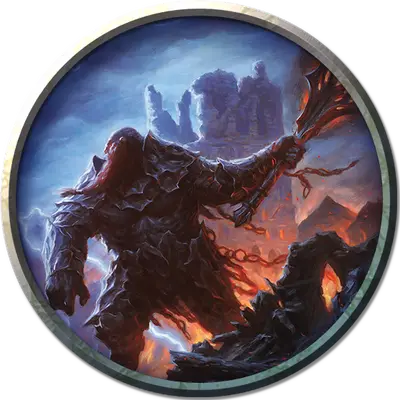

Залтэмбер
Zaltember
Большой Великан, законно-злой, именной НИП

Класс Доспеха 13 (кольчужная рубаха)
Хиты 30 (4к10 + 8)
Скорость 30 футов
| мод | спас | ||
|---|---|---|---|
| СИЛ | 17 | +3 | +3 |
| ЛОВ | 10 | +0 | +0 |
| ТЕЛ | 14 | +2 | +2 |
| мод | спас | ||
|---|---|---|---|
| ИНТ | 10 | +0 | +0 |
| МДР | 10 | +0 | +0 |
| ХАР | 10 | +0 | +0 |
Иммунитет к урону огонь
Чувства пассивное Восприятие 10
Языки Общий, Великаний
Опасность 1 (200 опыта)
Бонус мастерства +2
Действия
Боевой топор. Рукопашная атака оружием: +5 к попаданию, досягаемость 5 футов, одна цель. Попадание: Рубящий урон 12 (2к8 + 3), или рубящий урон 14 (2к10 + 3), если используется двумя руками.
Метательное копье. Рукопашная или дальнобойная атака оружием: +5 к попаданию, досягаемость 5 футов или дистанция 30/120 футов, одна цель. Попадание: Колющий урон 10 (2к6 + 3).